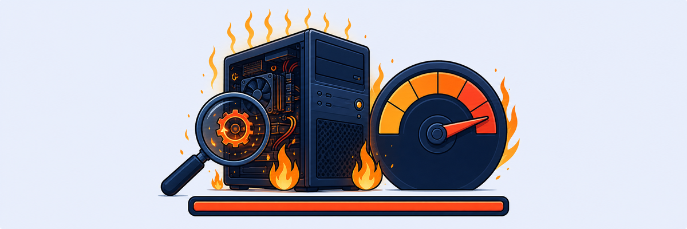

Lab 3: Troubleshooting End User Device Root Causes — High CPU
Scenario: Barry Bogdown (Device: Barry-PC) reports periodic slowdowns when accessing SaaS apps. The issue comes and goes. Service Desk has escalated for immediate investigation.

Not every ZDX score drop is a network problem. Device health data — CPU, memory, disk I/O — is captured alongside network probes so you can distinguish between endpoint and infrastructure issues without visiting the device.
- The ZDX Score for Barry Bogdown shows a repeating cycle of Poor, then Good, then Poor again. What is different about this pattern compared to a user whose score is always Poor?
- Y-Engine reports Device CPU High at 100% confidence. Could a CPU-bound device affect cloud application performance even if the network path is healthy? Explain why.
- Adobe Premiere Pro.exe is using 97% CPU. The process appears periodically. What remediation steps would you recommend to Barry’s manager, and how would you use ZDX to confirm the fix worked?
Task 3.1: View User ZDX Score for an Application
1 Find Barry Bogdown and Confirm Periodic Slowdowns
- Use User Search to find
Barry Bogdown. - Set the time range to 48 Hours and observe the ZDX Score Over Time graph.
- Select an interactive user application (e.g. Microsoft Teams Web App).
- Confirm the repeating pattern of periods of Poor performance followed by Good recovery.
Task 3.2: Analyze Poor ZDX Score Interval
2 Identify the Root Cause with Y-Engine
- In the ZDX Score Over Time graph, zoom in on a period where the score first drops to Poor.
- Click on the point where the score drops to Poor and click Analyze Score.
- Review the factors table. Note the top factor and its confidence level.
Result: The top factor is Device CPU High — 100% confidence. User experience was impacted due to high CPU utilisation (99% or more sustained utilisation detected).
Task 3.3: View Quantitative User Experience Metrics
3 Confirm Impact via Web Probe Data
- Scroll down to the Web Probe Metrics section.
- Examine the Page Fetch Time graph at the time of the Poor score.
- Note the difference between the PFT Baseline and the actual Page Fetch Time at the selected point.
Result: In this example, Page Fetch Time is 5633ms vs. a PFT Baseline of 701ms — the user was experiencing 8× slower response time than normal.
Task 3.4: View Device Health — CPU Usage Data
4 Identify the Offending Process
- Scroll down to the Device Health section.
- View the CPU Usage graph and note the 100% CPU utilisation at the Poor score timestamp.
- Click on the cursor line to see the Most Impacted Processes popup.
- Scroll to the Top Processes by CPU Incidents graph and confirm the application with the highest CPU usage.
Result: Adobe Premiere Pro.exe is consuming 97% of CPU. This periodic spike explains the repeating pattern of poor performance.